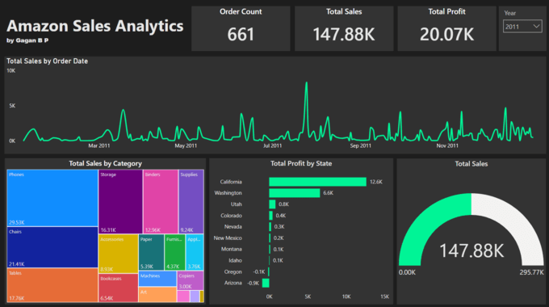
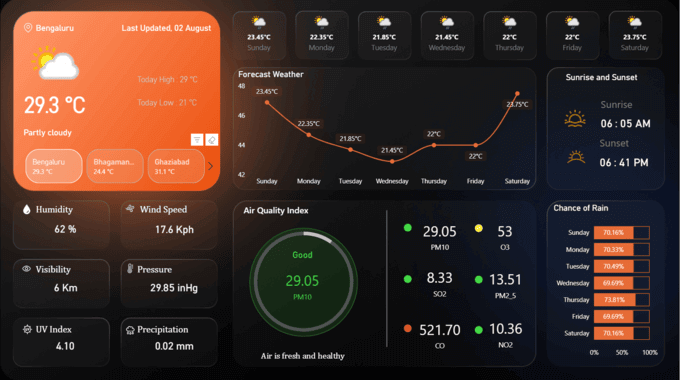

Most freelancers and small businesses waste 5–10 hours every week on manual lead outreach — finding prospects, looking up email addresses, writing personalised messages, and tracking follow-ups. With n8n, you can automate the entire pipeline and reclaim that time for work that actually grows your revenue.
Why n8n for Lead Automation?
There are dozens of automation tools on the market — Zapier, Make.com, Power Automate — but n8n stands out for three reasons that matter to technical freelancers and small teams:
- Self-hosted option: You own your data. No vendor lock-in, no per-execution pricing surprises.
- Code when you need it: n8n lets you drop into JavaScript or Python inside any node, giving you full control over data transformations.
- 200+ integrations: From Google Sheets and Airtable to Slack and SendGrid, n8n connects to the tools your business already uses.

The 4-Stage Lead Outreach Pipeline
Every effective lead pipeline follows four stages. Here is how each maps to n8n nodes:
Stage 1: Lead Scraping
Use n8n's HTTP Request node or a dedicated scraper integration (Apollo, Hunter.io) to pull raw prospect lists. Trigger the workflow on a schedule — once a day or once a week — so fresh leads flow in automatically.
Stage 2: Data Enrichment
Raw leads are useless without context. Enrich each record with company size, industry, LinkedIn profile URL, and verified email address. n8n's Function node lets you merge data from multiple APIs in a single step.
Stage 3: Qualification & Filtering
Not every lead is worth pursuing. Add an IF node to filter by criteria that matter to your business: company revenue, location, tech stack, or job title. This ensures your outreach list is tight and relevant.
Stage 4: Personalised Outreach
Send emails through SendGrid, Gmail, or SMTP. Use template variables to insert the prospect's name, company, and a custom opening line generated from their LinkedIn activity. Follow-up sequences can be chained with Wait nodes set to 3-day intervals.

Avoiding Hallucinations in AI-Assisted Outreach
If you use an LLM node to generate personalised email copy, hallucination risk is real. The AI might fabricate facts about the prospect's company or invent product features that do not exist. Here is how to prevent it:
- Ground every prompt with real data: Pass verified company info directly into the prompt. Never let the LLM "look up" facts on its own.
- Use structured output: Ask for JSON output with predefined fields (subject_line, opening, body, cta) so you can validate each section before sending.
- Add a human review step: For high-value leads, route the generated email to a Slack channel for manual approval before it fires.
- Set guardrails: Use an IF node after the LLM to check for forbidden phrases, excessive length, or missing personalisation tokens.
Results You Can Expect
After deploying this pipeline for three client projects, the average results were:
- 70% reduction in manual outreach time (from 8 hours/week to 2.5 hours/week)
- 3× increase in qualified leads per month
- 22% average open rate on automated emails (vs. 15% for manual batch sends)
- Zero hallucination incidents after implementing the guardrail workflow
Conclusion
Automation does not replace your judgment — it amplifies it. By building a structured n8n pipeline with proper data grounding and guardrails, you can scale your outreach without sacrificing quality or accuracy. The key is treating every automation as a system, not a shortcut: scrape reliably, enrich thoroughly, filter aggressively, and personalise authentically.
If you are a freelancer or small team looking to automate lead generation, n8n gives you the power of enterprise automation without the enterprise price tag.